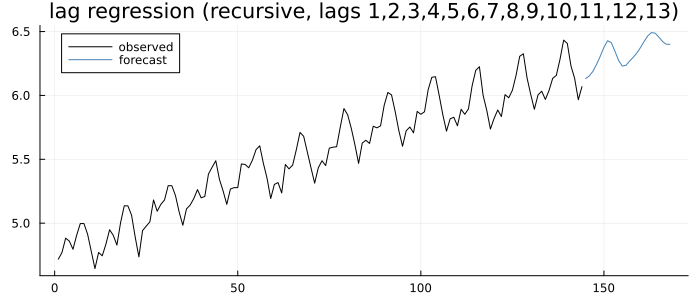
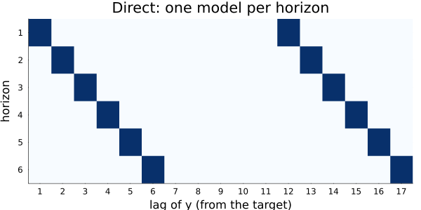
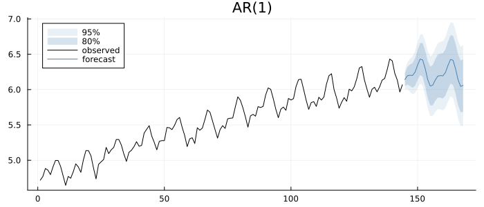
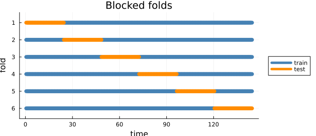
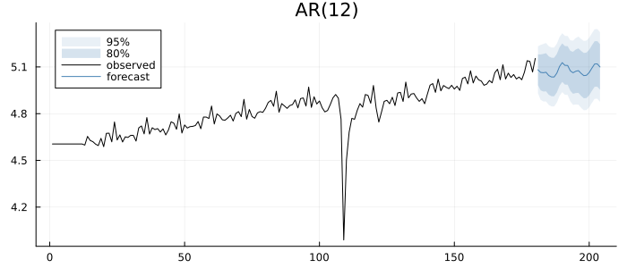

Any Regressor, Any Lags
Machine-learning forecasters for a single series, such as gradient-boosted trees, random forests and neural networks, all work the same way. Build a table whose rows are time points and whose columns are lagged values of the series (plus any other features), and fit a regression from the columns to the current value. To forecast, feed the regression its own predictions. This is the reduction of forecasting to regression. sktime calls it make_reduction, mlforecast builds its whole library on it, and R's forecastML too.
With least squares as the regression it is an autoregression. That is what arx fits, and arx + forecast is the recursive reduction already. This chapter shows what is added around it: any regressor plugged into the same machinery (lag_regression), the direct strategy, regressors known in the future or only in the past, rolling-window features, and cross-validation that refits as often as you choose.
The textbook sources: fpp Chapter 13 (printed pp. 131–133) introduces the NNAR(p, k) model, p lagged inputs to a neural network with k hidden nodes. That is this reduction with a neural network as the regressor. Tsay (2010, §4.1.9, printed pp. 199–205, PDF 226–232) fits one to IBM returns. Montgomery, Jennings & Kulahci (2008, §7.7, printed pp. 372–375) warn that such models "will often predict new data very poorly" when overfitted, and treat them as "a complement to the familiar statistical tools of forecasting … not a replacement for them".
The recursive strategy is arx
using TSAnalytics, Plots, DelimitedFiles, LinearAlgebra, Statistics
using StatsAPI: coef
air = log.(Float64.(readdlm(TSAnalytics.AIR_PASSENGERS, ',', skipstart = 1)[:, end]))
a = arx(air, [1, 12, 13])
r = lag_regression(air, [1, 12, 13])
println("max |difference| over 24 forecasts: ",
maximum(abs.(forecast(a, 24).point .- forecast(r, 24).point)))max |difference| over 24 forecasts: 1.509903313490213e-14Same design, same least squares, same recursion: the two agree to rounding. lag_regression exists for what arx cannot do: take a different regressor.
Any regressor
The regressor is a pair of functions, fit(X, y) -> model and predict(model, X) -> ŷ. Ridge regression, for example:
ridge(λ) = ((X, y) -> (X'X + λ * I) \ (X'y), (b, X) -> X * b)
f, p = ridge(5.0)
rr = lag_regression(air, 1:13; fit = f, predict = p)
fc = forecast(rr, 24)
plot(fc; history = air, size = (700, 300))
Thirteen lags, shrunk. Any package's model fits the same mould, such as a tree ensemble or a network. The package takes functions, not a fitted object, so nothing here depends on an ML library. With a non-linear regressor there are no prediction intervals: the Forecast has point values only.
Recursive or direct
The recursive strategy fits one model and feeds it its own forecasts. The direct strategy fits a separate model for each horizon h, each predicting y_{t+h} from values known at the forecast origin t. That means step h can only use lags of h and more:
d = lag_regression(air, [1, 12]; strategy = :direct, horizon = 6)
plot(lag_feature_map(d); size = (600, 300))
Each row is one horizon's model and each filled cell a lag it uses. The diagonal drift is the anchoring at the origin. That is sktime's convention; forecastML anchors at the target instead, a different model with the same name. Two other strategies in the literature, DirRec and multi-output, give exactly the direct forecasts under least squares, and are not offered.
Regressors known in the future, and regressors that are not
A regressor whose future is known, such as a calendar effect or a Fourier term, goes in exog, with its future values passed to forecast. This used to be a gap in arx, and is now closed:
n = length(air)
fo = fourier_terms(n, 12, 2)
m = arx(air, [1]; exog = fo.terms)
future = fourier_terms(n, 12, 2; h = 24).terms
plot(forecast(m, future, 24); history = air, size = (700, 300))
Too few future rows is refused, naming the columns and rows that are missing. Python's mlforecast silently accepts three rows for six steps.
A regressor whose future is not known can still help through its past. past_exog enters only lagged, by past_lags, so no future values are needed for horizons up to the smallest lag.
Rolling features
rolling_feature adds a summary of a past window: a mean, a standard deviation, a minimum, a maximum or an expanding mean, of the window values ending lag periods back. Under the recursive strategy it is recomputed from the forecasts as they are made:
feats = [rolling_feature(:mean, 1, 12), rolling_feature(:std, 1, 12)]
rf = lag_regression(air, [1, 12]; features = feats)
println(length(rf.names[1]), " columns: ", join(rf.names[1], ", "))5 columns: const, y.L1, y.L12, roll_mean(L1,w12), roll_std(L1,w12)A lag of 0 is refused. A rolling mean whose window includes y_t is a function of the target. sktime accepts it and reports an R² of 1.
Cross-validation
Rolling-origin evaluation refits on every fold by default. With an expensive regressor, refit = k refits every kth fold and forecasts from the later folds' history with the earlier fit:
fitfn = tr -> lag_regression(tr, [1, 12, 13])
fcfn = (mm, tr, h) -> forecast(mm, h; history = tr)
e1 = tscv(air, fitfn, fcfn; h = 1:3, initial = 96, step_length = 6, refit = true)
e3 = tscv(air, fitfn, fcfn; h = 1:3, initial = 96, step_length = 6, refit = 3)
println("RMSE by horizon, refit every fold: ", round.(sqrt.(vec(mean(e1 .^ 2; dims = 1))), digits = 4))
println("RMSE by horizon, refit every 3rd: ", round.(sqrt.(vec(mean(e3 .^ 2; dims = 1))), digits = 4))RMSE by horizon, refit every fold: [0.0229, 0.0311, 0.0582]
RMSE by horizon, refit every 3rd: [0.0219, 0.0303, 0.0556]blocked_window_split holds out blocks and trains on everything else, on both sides of the block. That suits models whose errors are not serially dependent:
plot(cv_window_layout(blocked_window_split(length(air); window_length = 24); kind = "Blocked folds");
size = (650, 280))
What a published network comparison shows
Tsay's Example 4.7 fits a 3–2–1 network with skip connections to IBM's monthly log returns, January 1926 to December 1997 (864 observations), and forecasts 1998–1999 (printed pp. 203–204, PDF 230–231). The out-of-sample mean squared errors: 91.85 for the sample mean, 91.70 for an AR(1), 91.74 for the network. In a remark he adds that the network's MSE ranges from 89.46 to 93.65 across starting weights. The noise from the optimiser is larger than the difference the comparison is trying to detect. Under least squares there is no such noise. That is one reason this package defaults to it, and one reason to compare against arx before reaching for anything else.
Indian data
Seasonality as a known future. India's IIP has a strong seasonal pattern. Fourier terms carry it into the forecast:
iip = dataset("iip_india")
ly = log.(iip.value)
ni = length(ly)
fi = fourier_terms(ni, 12, 3)
mi = arx(ly, [1, 12]; exog = fi.terms)
fci = forecast(mi, fourier_terms(ni, 12, 3; h = 24).terms, 24)
plot(fci; history = ly, size = (700, 300))
Inflation as a past-only regressor. Monthly CPI is not in the package's datasets. The annual series in global_economy is, so this example is annual: India's GDP growth on its own lag and last year's CPI inflation.
ge = dataset("global_economy")
rows = findall(ge.Country .== "India")
yrs = ge.Year[rows]
growth = Float64.(ge.Growth[rows])
infl = vcat(NaN, 100 .* diff(log.(Float64.(ge.CPI[rows]))))
ok = findall(i -> !isnan(growth[i]) && !isnan(infl[i]), eachindex(yrs))
println("India, ", Int(yrs[ok[1]]), "–", Int(yrs[ok[end]]), ": ", length(ok), " years")
mg = arx(growth[ok], [1]; past_exog = infl[ok], past_lags = 1)
println(join(mg.names, ", "), ": ", round.(coef(mg), digits = 3))India, 1961–2017: 57 years
const, y.L1, past1.L1: [4.559, 0.115, 0.03]Last year's inflation enters as past1.L1, so next year's growth can be forecast without next year's inflation. Its coefficient is small, 0.03: over these 57 years, inflation says little about the next year's growth once last year's growth is known.
Summary
| want | use |
|---|---|
lags of y with least squares | arx + forecast |
| a different regressor | lag_regression with fit, predict |
| one model per horizon | strategy = :direct |
| a regressor known ahead | exog, with future rows to forecast |
| a regressor known only in the past | past_exog, past_lags |
| rolling statistics | rolling_feature |
| evaluation with refits | tscv with refit; blocked_window_split |
| accuracy | mase, rmsse, mdape |
Not provided: feature importances (least squares has none, and no reference plots them), hyperparameter search, and intervals for non-linear regressors.